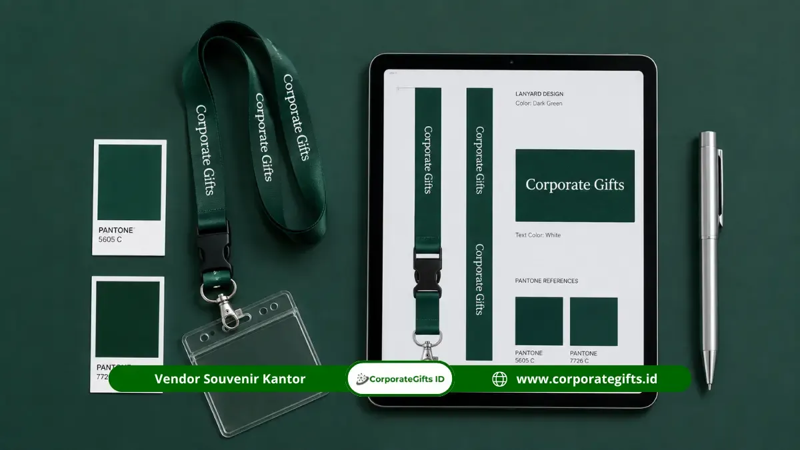

Corporate Gifts ID - Layanan custom sablon logo lanyard adalah proses mencetak identitas visual perusahaan, seperti nama instansi, logo korporat, slogan, dan kode warna resmi brand guideline pada permukaan tali lanyard menggunakan teknologi sablon presisi, cetak sublimasi digital, maupun tenunan benang jacquard woven. Media ini memungkinkan karyawan menampilkan identitas branding kantor secara konsisten dan terpadu setiap hari saat berinteraksi dengan rekan kerja, mitra bisnis, maupun klien di ruang publik.
Poin Kunci Pengadaan Lanyard Logo Perusahaan:
- Media Branding Berdampak Tinggi: Dipakai setinggi dada setiap hari kerja, menjadikannya salah satu aset visual perusahaan yang paling sering dilihat.
- Pilihan Teknik Produksi: Sablon/sublimasi sangat tepat untuk logo multi-warna atau gradasi kompleks, sedangkan teknik woven menghasilkan tenunan benang premium yang tahan abrasi.
- Pentingnya Proofing Warna: Tahap pencocokan sampel fisik dengan katalog warna Pantone (PMS) memastikan tidak terjadi pergeseran warna visual merk.
- Aksesori Fungsional: Penyesuaian lebar tali (1.5 cm, 2 cm, atau 2.5 cm) dipadukan dengan kait buaya nikel, safety breakaway buckle, dan retractable yoyo badge.
Pentingnya Custom Sablon Logo Lanyard untuk Branding Korporat
Lanyard bukan sekadar tali penggantung kartu identitas (ID card). Dalam ekosistem kerja modern, lanyard merupakan bagian integral dari pakaian dinas harian (PDH) dan corporate identity kit. Karyawan yang mengenakan lanyard seragam dengan cetakan logo rapi secara otomatis membangun kesan tertib, profesional, dan solid di mata publik luar.
Selain fungsi internal, lanyard custom menjadi salah satu merchandise paling dicari dalam paket seminar kit event, pameran B2B expo, hingga konferensi internasional karena biaya produksinya sangat efisien dengan tingkat keterlihatan (brand impressions) yang sangat tinggi.
Tahapan Lengkap Proses Cetak Logo pada Tali Lanyard
Memahami alur manufaktur membantu tim HR, pengadaan, dan marketing merencanakan linimasa pesanan secara tepat. Berikut tahapan standar produksi di CorporateGifts.ID:
- Konsultasi Desain dan Layouting Digital: Tim desainer kami memposisikan logo dan teks perusahaan pada bidang kerja tali (biasanya panjang 90 cm dengan lebar 1.5 cm, 2 cm, atau 2.5 cm). Layout diatur agar logo terbaca tegak lurus baik saat lanyard dikalungkan di leher sisi kiri maupun kanan.
- Pemilihan Material Pita: Menentukan jenis bahan dasar, seperti bahan tissue (permukaan selembut sutra, sangat menyerap tinta sublimasi) atau bahan polyester nilon (bertekstur serat kuat dengan daya tahan tarik tinggi).
- Proofing Sampel Fisik (Color Approval): Sampel mini dicetak untuk mencocokkan densitas warna tinta dengan standar kode warna korporat sebelum mesin cetak berkecepatan tinggi dijalankan.
- Pencetakan Massal (Mass Printing): Proses pencetakan dilakukan dengan transfer panas sublimasi digital beresolusi tinggi atau sablon presisi untuk menjamin ketajaman tiap detail garis logo.
- Finishing, Jahit, dan Perakitan Aksesori: Pemasangan stopper lepas cepat (safety breakaway clip), kait besi nikel tebal, serta rivet pengunci agar tali terikat kuat dan rapi.
Tabel Perbedaan Teknik Sablon, Sublimasi Digital, dan Woven
Setiap teknologi pencetakan memiliki keunggulan karakteristik yang disesuaikan dengan kebutuhan logo dan masa pakai:
| Teknik Cetak | Karakteristik Tampilan | Kesesuaian Desain Logo | Daya Tahan | Rekomendasi Pemakaian |
|---|---|---|---|---|
| Sublimasi Digital Printing (Full Color) | Menyatu sempurna dengan serat kain tissue, permukaan sangat halus, bisa cetak 2 sisi | Logo warna-warni, foto, ilustrasi gradasi, motif pola kompleks tanpa batas warna | Sangat awet, tidak akan retak atau mengelupas saat dicuci | Seragam kantor sehari-hari, lanyard BUMN/korporat, merchandise resmi |
| Sablon Manual / Rubber Paste | Lapisan cat timbul sedikit di atas permukaan tali polyester berkilau | Logo solid 1 sampai 2 warna tanpa gradasi halus | Cukup awet, namun berisiko retak setelah penggunaan beberapa tahun | Event seminar kilat, kartu tamu pameran, kepanitiaan jangka pendek |
| Woven Jacquard (Tenun Benang) | Logo dibentuk langsung dari pola anyaman benang warna, bertekstur klasik berwibawa | Logo sederhana dengan tipografi tegas, maksimal 3-4 warna benang | Maksimal (seumur hidup bahan), mustahil pudar atau luntur | Instansi militer, sekolah kedinasan, seragam eksekutif pabrik |

Detail perakitan kaitan nikel premium, safety break, dan wadah kartu ID transparan.
Panduan Menyiapkan File Desain dan Spesifikasi Aksesori
Kecepatan proses pra-cetak sangat ditentukan oleh kesiapan materi dari pemesan. Pastikan hal-hal berikut telah disiapkan sebelum mengajukan pesanan ke vendor:
- Master File Vektor Resolusi Tinggi: Kirimkan file dalam format .AI, .EPS, atau .PDF vektor. Hindari file tangkapan layar (screenshot) berkulitas rendah berformat JPEG/PNG yang berisiko pecah saat diperbesar.
- Kode Warna Panduan Brand: Sertakan kode warna CMYK atau kode Pantone (PMS) resmi perusahaan agar teknisi warna tidak menebak-nebak rona warna yang diinginkan.
- Konfigurasi Aksesori yang Tepat: Tentukan pilihan aksesori bawah, antara lain:
- Kait Besi Nikel (Oval Hook / Lobster Clasp): Kuat menggantung kartu dan kunci pintu akses elektronik.
- Safety Breakaway Buckle: Gesper pengaman di tengkuk leher yang akan lepas otomatis bila tali tersangkut mesin atau pintu lift, sangat krusial untuk standar K3 di pabrik.
- Retractable Yoyo Badge: Tali pegas elastis yang memudahkan men-tap kartu akses RFID tanpa perlu melepas tali dari leher.
SOP Proofing dan Konsistensi Warna Brand Guideline
Tantangan terbesar dalam pencetakan merchandise berbasis kain adalah absorpsi serat benang terhadap pigmen warna. Bahan polyester tenun kasar menyerap tinta lebih lambat sehingga rona warna bisa tampak sedikit lebih gelap dibandingkan bahan tissue satin yang berpori halus dan rapat.
Oleh karena itu, CorporateGifts.ID menerapkan SOP ketat: setiap pesanan pengadaan institusi wajib melalui tahap digital mock-up approval dan pembuatan sample proofing fisik (untuk pesanan di atas ambang batas volume tertentu) sebelum seluruh batch ratusan atau ribuan lanyard diproduksi massal. Langkah ini menjamin 100% konsistensi reputasi visual brand Anda.
Pertanyaan Seputar Custom Sablon Logo Lanyard (FAQ)
Kesimpulan dan Rekomendasi Pemesanan
Custom sablon logo lanyard adalah investasi branding kantor yang sangat hemat anggaran namun berdaya jangkau luar biasa. Dengan mengombinasikan material tissue bermutu tinggi, teknologi sublimasi beresolusi tajam, serta perakitan aksesori nikel yang awet, seragam identitas perusahaan Anda akan tampil memukau dan konsisten.
Jelajahi koleksi perlengkapan kantor lainnya di katalog merchandise perusahaan CorporateGifts.ID dan dapatkan konsultasi tata letak serta preview mockup gratis dari tim spesialis kami hari ini.

Ditulis oleh: Arinda Zakia
Corporate Gifting Strategy SpecialistKonsultan strategi merchandise dan branding di CorporateGifts.ID. Berpengalaman lebih dari 7 tahun dalam menangani pengadaan seragam lanyard instansi, seminar kit massal, serta standardisasi identitas visual korporat di ratusan perusahaan terkemuka Indonesia.
Lihat Profil Lengkap & Panduan Lainnya